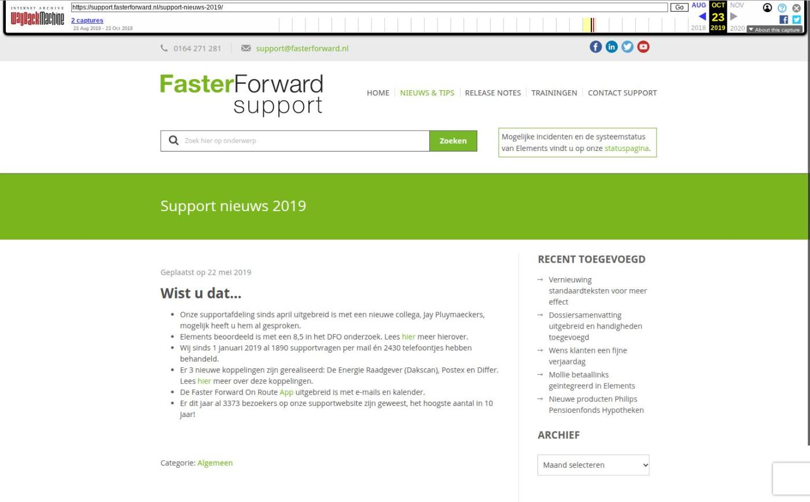

Nieuwe features voor Uwkluis, verzekeringen en meer

Tekstinhoud
Op donderdag 14 september is Elements weer verbeterd en uitgebreid met nieuwe features! Deze release bevat uitbreidingen en optimalisaties voor advieskantoren en serviceproviders.
Advieskantoren
Nieuwe features Uwkluis
Persoonlijke en algemene documenten verduidelijkt
Huidige contract/polisblad zichtbaar onder product
Foto's medewerkers tonen
De dienst wordt niet meer getoond in Uwkluis
Dossier verwijderen uit PortefeuilleSignalen
Log opnieuw in bij Hypotheekbond voor actuele koppeling
Dossiersysteemstatus koppelen
Gemakkelijk AFM vergunningen controleren
Elements visueel verbeterd
Verzekeringen
AWI integratie uitgebreid
Handmatig ADN match ontkoppelen
Maatschappij levert product met andere branche aan
Nieuwe dekkingen en landbouw/werktuigen SIVI toegevoegd
Serviceprovider
Stukken opvragen vanuit workflow serviceprovider
Overige verbeteringen
Advieskantoren
Nieuwe features Uwkluis
Persoonlijke en algemene documenten verduidelijkt
In Uwkluis wordt nu onderscheid gemaakt tussen persoonlijke en algemene documenten. De persoonlijke documenten betreffen de blauwe mappen in het klantdossier in Elements. De algemene documenten zijn de rode mappen in het klantdossier. De algemene documenten zijn zichtbaar voor alle gebruikers Uwkluis. Via de verkenner is het mogelijk om de algemene documenten publiek of niet publiek te zetten. Zo kan je bepalen welke algemene documenten de klant wel of niet ziet in Uwkluis. Ook kan je een einddatum geven aan een document. Is de einddatum verstreken dan is het document niet meer zichtbaar in de Uwkluis die na deze einddatum zijn aangemaakt. In de Uwkluis die al actief zijn voor deze einddatum blijft het document wel zichtbaar mits deze op publiek staat. Let op: voor het werken met de einddatum moet een proces aangezet worden. Wil je hiervan gebruik maken stuur dan een e-mail naar support@fasterforward.nl. Ook moet je gebruik maken van Uwkluis. Lees hier meer over de voordelen en werking van Uwkluis.
Huidige contract/polisblad zichtbaar onder product
Onder het product wordt nu altijd het huidige contract/polisblad automatisch getoond. Wanneer het polisblad/contractdocument wijzigt in Elements, wordt dit automatisch aangepast in Uwkluis. Zo staat het actuele polisblad onder het product in Uwkluis.
Foto's medewerkers tonen
Het is mogelijk om de foto's van medewerkers toe te voegen aan Uwkluis. Deze foto kan je in Elements instellen in Beheer – Organisatie & personen – betreffende persoon – Algemeen. Als deze al in Elements staat ingesteld, dan wordt deze direct in Uwkluis getoond. Let op: alleen de foto's van personen die op publiek staan en die niet te groot van formaat zijn worden getoond in Uwkluis.
De dienst wordt niet meer getoond in Uwkluis
In Uwkluis toont de dienst weinig informatie voor de eindconsument. Hierdoor is ervoor gekozen om de dienst niet meer te laten zien onder producten in Uwkluis. De gekoppelde documenten en stukkenlijst aan de dienst zijn nog wel zichtbaar.
Dossier verwijderen uit PortefeuilleSignalen
Als je een dossier in Elements verwijdert, dan wordt deze nu ook in PortefeuilleSignalen verwijderd. Op deze manier blijft PortefeuilleSignalen gelijk met het aantal dossiers in Elements.
Log opnieuw in bij Hypotheekbond voor actuele koppeling
Onder de motorkap hebben we de koppelingen met PortefeuilleSignalen en Fastlane vernieuwd. Zo bevatten ze weer de meest actuele standaarden in de markt en blijft alles werken zoals het hoort.
Wat moet je doen?
Elke medewerker met een PortefeuilleSignalen en/of Fastlane account moet binnenkort eenmalig opnieuw inloggen met zijn/haar Hypotheekbondaccount. Dit doe je in een willekeurig klantdossier onder het tabblad 'Hypotheekbond' of 'Fastlane'. Als je dit in één klantdossier hebt gedaan, werkt de nieuwe koppeling in heel jouw Elementsomgeving.
Dossiersysteemstatus koppelen
De dossierstatussen worden vanaf nu gekoppeld aan dossiersysteemstatussen. Dossiersysteemstatussen worden onderverdeeld in Nieuw, Lopend en Beëindigd. Ze zijn overkoepelend en bieden voor de toekomst mogelijkheden voor het filteren in rapportages of het opruimen van dossiers. Zo kan je een duidelijk overzicht creëren van nieuwe, lopende en beëindigde dossiers. Wanneer de dossiersysteemstatus is gewijzigd, is op te halen door middel van een tag. Daarnaast kan je op deze statussen filteren in Track and Trace.
Aan de meest gangbare dossierstatussen hebben wij al een dossiersysteemstatus gekoppeld. Het kan voorkomen dat er in jouw Elementsomgeving andere dossierstatussen staan. Er verschijnt dan een oranje melding met het verzoek de status te koppelen aan een dossiersysteemstatus. Lees hier hoe je de dossiersysteemstatus kunt instellen.
Gemakkelijk AFM vergunningen controleren
Vanaf nu kan je gemakkelijk inzien welke vergunningen van intermediairs/deelnemers zijn komen te vervallen of zijn gewijzigd. Hiervoor is de module Gewijzigde AFM vergunningen gemaakt. In deze module kan je filteren op deelnemer, datum en type vergunning. Wanneer je de wijziging hebt gecontroleerd dan kan je deze afvinken. Iedere nacht worden de resultaten bijgewerkt. Onder 'Binnengekomen berichten' kan je zien of er nieuwe gewijzigde vergunningen zijn toegevoegd aan de module. Lees er hier meer over.
Wil je gebruik maken van deze module? Stuur dan een e-mail naar support@fasterforward.nl.
Elements visueel verbeterd
In de technische release zijn er visuele verbeteringen doorgevoerd, waardoor jouw Elementsomgeving overzichtelijker wordt. Zo staan bijvoorbeeld in de ADN module de tabbladen niet meer in een zwarte regel. Deze staan nu in de bekende grijze tabbladen. Ook wordt bijvoorbeeld de module in de menubalk groen opgelicht als je hier met je muis op staat. Functioneel is er niets veranderd.
Verzekeringen
AWI integratie uitgebreid
Naast het aanmaken van nieuwe relaties, is het nu ook mogelijk om vanuit Elements relaties aan bestaande AWI dossiers te koppelen. Daarnaast hebben we de integratie technisch, onder de motorkap, verbeterd.
Zo kun je snel en eenvoudig in AWI vergelijken welke verzekering past bij de behoefte van de klant. Bovendien kun je direct een nieuwe schadeverzekering afsluiten. De aangevraagde offerte/polis stuur je daarna via een AFD-bericht weer terug naar de externe berichteninbox in Elements.
Lees hier hoe het werkt.
Wil je de AWI integratie gebruiken?
Neem dan contact op met AWI. Je dient namelijk eerst een contract af te sluiten met AWI. Je moet hierbij ook AWI Connect afnemen. Geef daarnaast bij AWI aan dat je de Elements integratie wilt gebruiken. AWI regelt dan vervolgens met Faster Forward de inrichting voor de koppeling.
Handmatig ADN match ontkoppelen
Nu kan je ook als je werkt met ADN 3.0 de ADN match handmatig ontkoppelen. De match kan worden ontkoppeld als deze nog niet financieel is verwerkt. Voor een maatschappij-incassopost houdt dit in dat deze niet geboekt is. Bij een tussenpersoon-incassopost geldt dat de tp-incassoboeking niet is omgezet naar een factuur, de factuur niet is geboekt of de post niet is opgenomen in een RC regeling. Bij ontkoppeling wordt de match uit het tabblad Matching in de ADN module verwijderd en de beoordeling in de batch wordt gereset. Bij een maatschapij-incassopost wordt de controle journaalpost verwijderd. Bij een tussenpersoon-incassopost wordt de factuur (indien deze nog niet is geboekt op basis van de tp-incasso boeking) en de tp-incassoboeking (indien er geen factuur van gegenereerd is) verwijderd.
Maatschappij levert product met andere branche aan
Als je werkt met mutatievoorstellen wordt vanaf nu, na ADN verwerking, de branche die de maatschappij aanhoudt in de productkaart getoond. Het kan gebeuren dat in de productkaart van Elements bijvoorbeeld de branche Auto geselecteerd staat, maar dat de maatschappij de branche Motorrijtuigen gebruikt. Deze branche wordt meegestuurd in het ADN bericht. Elements zorgt ervoor dat deze juiste branche in de productkaart komt te staan. Ook worden eventueel de dekkingen aangepast. De velden of objecten die niet meer relevant zijn worden leeggemaakt of ontkoppeld na het verwerken van het ADN bericht. Hiervan wordt een registratie gemaakt om de wijziging vast te leggen. Daarnaast wordt de wijziging getoond in het mutatievoorstel.
Nieuwe dekkingen en landbouw/werktuigen SIVI toegevoegd
Als via ADN en Aplaza berichten binnenkomen, worden de nieuwste, bijbehorende dekkingen en/of landbouw/werktuigen aangemaakt. Deze zijn namelijk uitgebreid volgens de SIVI richtlijnen van juli. Hiermee zijn alle te selecteren verzekeringen up-to-date om correct te verwerken in een klantdossier. Hiernaast zie je nieuw toegevoegde dekkingen. Daarnaast zijn een zestiental nieuwe landbouw/werktuigen toegevoegd.
Nieuwe dekkingen
Ongevallen vrijwilligers
Ongevallen (bestuurs-)leden
Ongevallen kinderdagverblijf
Ongevallen sportvereniging
Aanvullingen WW en WGA
AVB kantoorrisico
Serviceprovider
Stukken opvragen vanuit workflow serviceprovider
Serviceproviders kunnen vanaf nu vanuit de workflow een DA-bericht verzenden naar de intermediair. Doordat deze stap in de workflow wordt ingericht, kan je als serviceprovider zelf bepalen wanneer je dit wilt inzetten in het proces.
Overige verbeteringen
Wanneer via de API een product wordt aangemaakt dan wordt de maatschappij uit dit product toegevoegd als business partner onder het tabblad Partijen & objecten
Wanneer een product wordt gearchiveerd dan worden de workflows onder het product verwijderd. Zo komt het niet meer voor dat er onterecht acties vanuit de workflow, bijvoorbeeld timers die afgaan of taken die worden aangemaakt, plaatsvinden. Zijn er in jouw omgeving workflows aanwezig die juist acties uitzetten onder gearchiveerde producten dan moet dit anders ingesteld worden.
Geplaatst op 14 september 2023 (Laatste update: 15 september 2023)
Laatste 5 releasenotes
Nog meer data en documenten vergelijken »
Gemakkelijk data en documenten vergelijken »
Verbeteringen boekhouding en facturatie »
Verbeteringen gespreksopname en onder de motorkap »
Verbeteringen onder de motorkap en gespreksopnames »